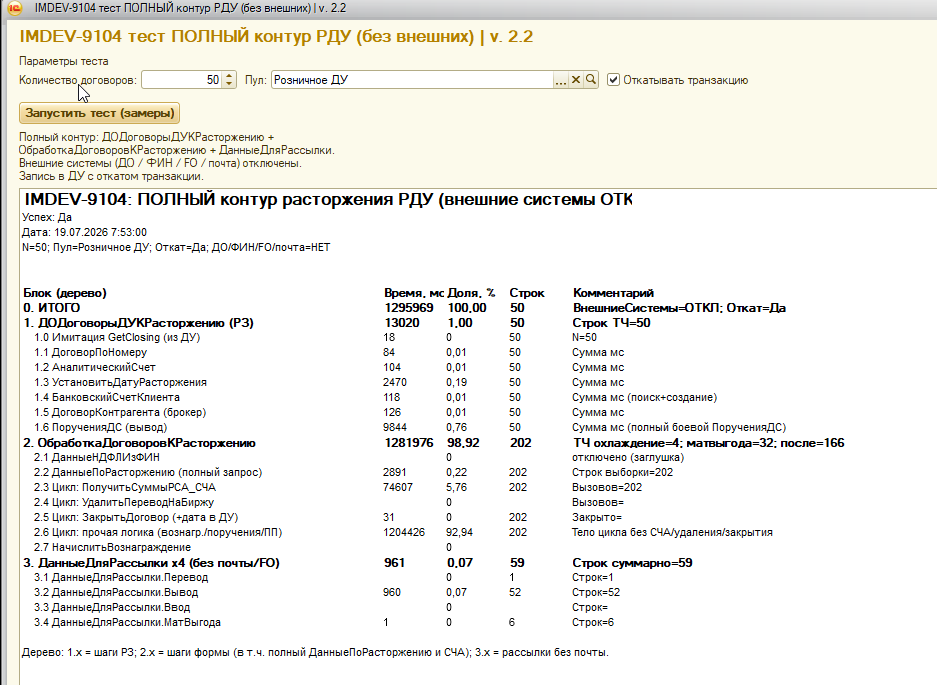

IMDEV-9104 — полный контур расторжения РДУ. Только версия теста v. 2.2.
| Параметр | Значение |
|---|---|
| Объект | внТестРасторжениеРДУ_ПолныйКонтур.epf, версия регистрации 2.2 |
| Контур | РЗ ДОДоговорыДУКРасторжению + ОбработкаДоговоровКРасторжению + ДанныеДляРассылки x4 |
| Внешние системы | ДО / ФИН / FO / почта — отключены (заглушки) |
| Запись в БД | Выполняется; в конце транзакция отката |
| Не входит в scope | Оптимизация «просто Записать» как цель; сравнение с коротким тестом v1.x |
Замер_50_Договоров_2_2.pff).
| Блок | мс | Доля % | Строк | Комментарий |
|---|---|---|---|---|
| 0. ИТОГО | 1 295 969 | 100.00 | 50 | Откат=Да; внешние ОТКЛ |
| 1. ДОДоговорыДУКРасторжению (РЗ) | 13 020 | 1.00 | 50 | из них 1.6 ПорученияДС ~9.8 с |
| 2. ОбработкаДоговоровКРасторжению | 1 281 976 | 98.92 | 202 | охл=4; матвыгода=32; после=166 |
| 2.3 ПолучитьСуммыРСА_СЧА | 74 607 | 5.76 | 202 | ~370 мс/вызов |
| 2.6 прочая логика (вознагр./поручения/ПП) | 1 204 426 | 92.94 | 202 | корзина проблем P1–P3 |
| 3. ДанныеДляРассылки x4 | 961 | 0.07 | 59 | без почты/FO |
Вывод по EPF: узкое место не РЗ и не СЧА, а лист 2.6.
Детализация внутри 2.6 — только через .pff (ниже).
Файл: Тестирование/Замер_50_Договоров_2_2.pff
Разбор: Тестирование/reports/pff_hotspots_50_full_2_2.json
| ID | Модуль / строка | Код (суть) | Вызовов | Self, с | Доля % |
|---|---|---|---|---|---|
| P2 | Документ.ПлатежноеПоручение.МодульМенеджера 1388 | РезультатЗапроса = Запрос.Выполнить();ПлатежныеПозицииПоСчетамДС |
104 | 514.76 | 39.88 |
| P1 | Документ.ПлатежноеПоручение.МодульМенеджера 1835 | РезультатЗапроса = Запрос.Выполнить();ПервыйЭтапПроверкиДостаточностиДС |
56 | 328.63 | 25.46 |
| P3 | MF_РасчетВознаграждения_РозничноеДУ 197 (в pff: e1cib/tempstorage/...d9bbdfb8c2) |
ЗапросДатаВсехВознаграждений.Выполнить(); |
43 | 205.08 | 15.89 |
| — | РасчетСЧА_РСА.МодульМенеджера 218 | запрос СЧА | 202 | 50.47 | ~3.9 |
2.6. Это целевые проблемы протокола.
Перед созданием платежного поручения на вывод клиенту вызывается проверка платёжной позиции. Почти всё время — один тяжёлый SELECT в модуле менеджера ПП.
CF/Documents/ПлатежноеПоручение/Ext/ManagerModule.bslПервыйЭтапПроверкиДостаточностиДСРезультатЗапроса = Запрос.Выполнить();// ObjectModule.bsl ~2010
СтруктураПлатежнойПозиции = Документы.ПлатежноеПоручение.ПервыйЭтапПроверкиДостаточностиДС(
МестоХранения, ДоговорДУ, ПоручениеПоДСНаВывод, НаДату);
При создании ПП по НДФЛ / вознаграждению / комиссии для нового документа подбирается банковский счёт УК с достаточной позицией. Самый тяжёлый self-time в прогоне.
CF/Documents/ПлатежноеПоручение/Ext/ManagerModule.bslПлатежныеПозицииПоСчетамДС (API уже принимает СписокДоговоровДУ)РезультатЗапроса = Запрос.Выполнить();// ObjectModule.bsl ~2062
ТЗ_ПлатежныхПозицийПоПодходящимСчетам =
Документы.ПлатежноеПоручение.ПлатежныеПозицииПоСчетамДС(ДоговорДУ, Валюта);
Важно: сигнатура функции уже пакетная (СписокДоговоровДУ), но контур расторжения
вызывает её поштучно — прямой кандидат на batch без смены API менеджера.
При инициации начисления вознаграждения проводится документ
НачислениеВознаграждения, который через
ДоговорыКонтрагентов.РезультатАлгоритма вызывает внешнюю обработку
MF_РасчетВознаграждения_РозничноеДУ.
В ветке расторжения медленный запрос к регистру ОбязательстваПоДС.
SRC/epf/MF_РасчетВознаграждения_РозничноеДУ_epf/.../Ext/ObjectModule.bslРазмерВознагражденияПриРасторжении// MF ObjectModule.bsl ~186-197 ВЫБРАТЬ МАКСИМУМ(ОбязательстваПоДС.Период) КАК ДатаВсехВознаграждений ИЗ РегистрНакопления.ОбязательстваПоДС КАК ОбязательстваПоДС ГДЕ ОбязательстваПоДС.ДоговорДУ = &ДоговорДУ И ОбязательстваПоДС.Основание.Ссылка ЕСТЬ NULL И ОбязательстваПоДС.ВидДвижения = ЗНАЧЕНИЕ(ВидДвиженияНакопления.Приход) РезультатЗапроса = ЗапросДатаВсехВознаграждений.Выполнить();
Условие Основание.Ссылка ЕСТЬ NULL часто мешает индексному отбору
и тянет разыменование составного типа — типичный кандидат на переписывание + индекс.
По каждой проблеме: формулировка и описание решения. Решения не реализованы в рамках данного протокола. Порядок по доле времени: P2 → P1 → P3.
ПлатежныеПозицииПоСчетамДС(одинДоговор, Валюта).
За прогон — 104 полных пересчёта платёжной позиции (~515 с).
При этом API функции уже принимает список договоров, но контур расторжения
использует его поштучно.
ПлатежныеПозицииПоСчетамДС(СписокДоговоровДУ, Валюта).
Результат разложить в соответствие ДоговорДУ → счета/позиции в памяти;
при создании документов брать данные из кэша, без повторного SELECT.
Дополнительно: снять план запроса L1388 и при необходимости поправить индексы /
отборы (ДоговорДУ, банковский счёт, периоды остатков), чтобы пакетный вызов
не деградировал на большом списке.
ДостаточноДенегНаСчету → ПервыйЭтапПроверкиДостаточностиДС
(56 раз, ~329 с). Каждый вызов заново считает позицию по остаткам/оборотам
Хозрасчетный, статусам ПП и депозитам для одного договора/счёта.
ПервыйЭтапПроверкиДостаточностиДСПоСпискуСчетов
(или эквивалентный один запрос на набор).
Если пакет сразу недоступен — кэш позиции по ключу
(ДоговорДУ, Счёт, Дата) на время одного прогона расторжения,
чтобы не считать одно и то же повторно.
Параллельно: анализ плана запроса L1835 и индексы под используемые отборы.
НачислениеВознаграждения алгоритм
MF_РасчетВознаграждения_РозничноеДУ в ветке расторжения
выполняет запрос к ОбязательстваПоДС
(МАКСИМУМ(Период) с условием Основание.Ссылка ЕСТЬ NULL).
43 вызова дают ~205 с. Разыменование составного типа в ГДЕ мешает
эффективному использованию индекса и удорожает каждый вызов.
Основание.Ссылка (явная проверка пустого основания /
тип через ВТ регистраторов), чтобы запрос шёл по индексу
ДоговорДУ + ВидДвижения + Период.
2) При необходимости добавить/уточнить индекс регистра под этот отбор.
3) Для массового расторжения — предзагрузка дат/сумм по списку договоров
одним запросом (или пакетный режим в MF) до цикла начислений,
либо кэш результата алгоритма по ДоговорДУ+ДатаРасчета внутри прогона.
Записи документов (Записать / проведение) как цель оптимизации
в IMDEV-9104 не рассматриваются: фокус — SELECT и повторные расчёты.
| Артефакт | Путь |
|---|---|
| EPF теста v2.2 | Тестирование/внТестРасторжениеРДУ_ПолныйКонтур.epf |
| Скрин отчёта замеров | Тестирование/reports/screenshot_full_contour_v2_2.pngоригинал: Тестирование/2026_07_19_07_57_18_...v._2.2.png |
| Замер производительности | Тестирование/Замер_50_Договоров_2_2.pff |
| JSON hotspots | Тестирование/reports/pff_hotspots_50_full_2_2.json |
| Разбор 3 точек (черновик) | Тестирование/reports/imdev9104_pp_two_hotspots.html |
| Настоящий протокол | Тестирование/reports/imdev9104_protocol_perf_v2_2.html |
ПлатежныеПозицииПоСчетамДС (P2),
затем пакет/кэш проверки достаточности (P1), затем индекс/перепись запроса MF (P3).